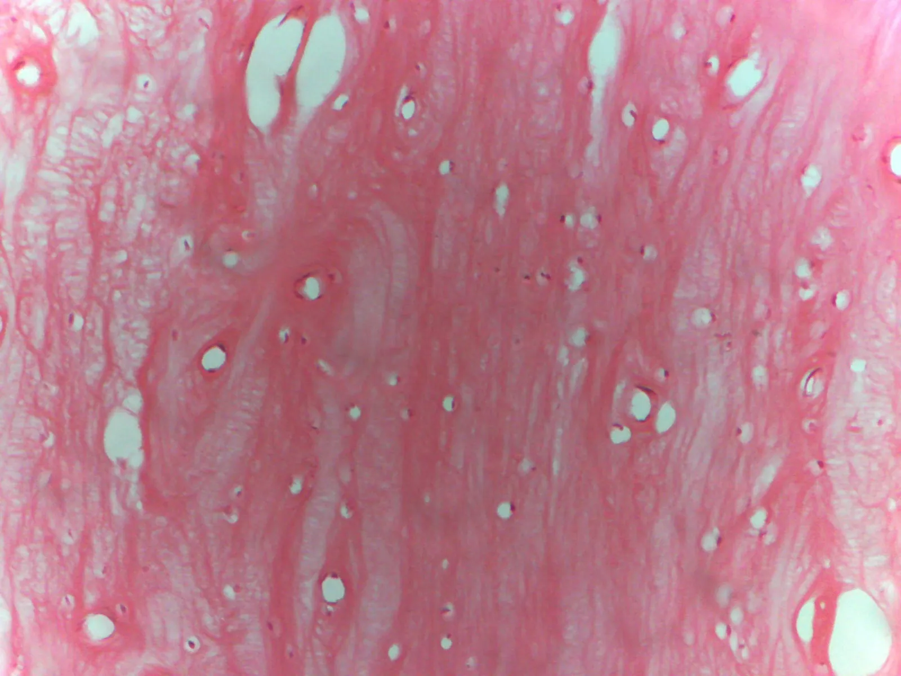
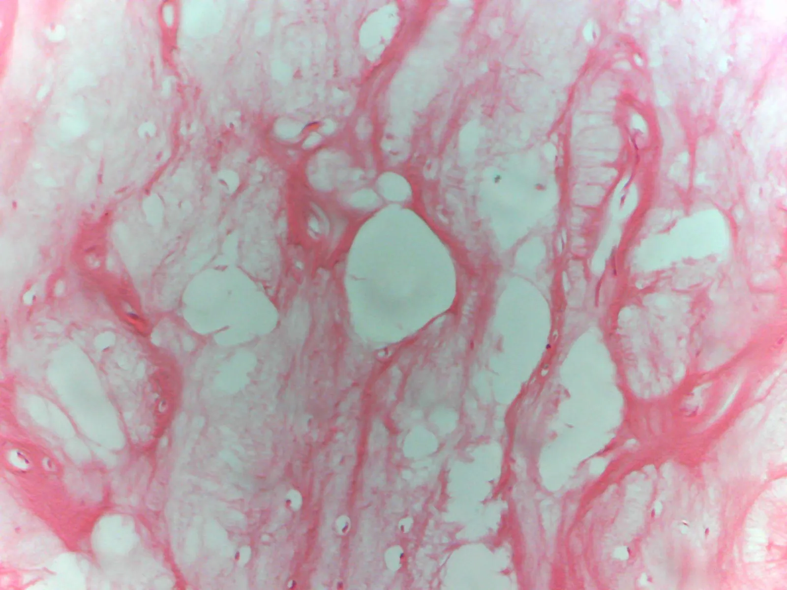

Lâmina 15 · Cartilagem e osso
Osso descalcificado (corte longitudinal)


Toque na imagem para ampliar. No computador, use as setas do teclado para trocar de imagem.
Lâmina 15 · Cartilagem e osso


Toque na imagem para ampliar. No computador, use as setas do teclado para trocar de imagem.